Every autumn, two human activities add smoke to the air of both Punjabs: farmers burning crop stubble, and Diwali fireworks. This year they fell on the same day. On Sunday 8 November, Diwali, satellites picked up 2,859 fire spots across Pakistani and Indian Punjab, the most of any day this season so far; in none of the seven seasons from 2019 to 2025 had the busiest day fallen on Diwali. That night, private air sensors in Delhi displayed US AQI readings above 1,000, up to 2,089. In Lahore, IQAir's city figure rose through the night after midnight and reached 398.5 µg/m³ of fine particles (PM2.5), a US AQI of 646, at 9 am on Monday, against 219 at the same hour on Sunday. Multan and Faisalabad rose too. Punjab's Environment Protection Department had warned of this on Sunday afternoon, according to a Dunya News report; the CAMS model series we retrieved on Monday had Lahore getting cleaner overnight. What the data cannot do is say how much of Monday morning came from the fires, how much from fireworks on either side of the border, and how much from Lahore itself.
2,859satellite fire spots in the two Punjabs on Diwali, 8 November: the season's highest so far
398.5µg/m³ PM2.5, IQAir's Lahore city figure at 9 am Monday (AQI 646), against 219 a day earlier
48 of 49Lahore station feeds on IQAir higher at 9 am Monday than at 9 am Sunday
2,089US AQI, the highest of three private sensors in Delhi that passed 1,000 on Diwali night
Check this report. Every number here is in data.json, with its source, capture time, place, units and method, and the raw captures and scripts sit alongside it. Air readings are what IQAir displayed on 9 November; they are not independently quality-checked, and IQAir revises some hours after first showing them. Fire counts are NASA satellite heat detections merged into spots, not confirmed fires. The air paths come from a simple model run on weather-model winds and are a guide, not a measurement. This is a monitoring report: it sets out what the instruments and models show, and says plainly what they cannot separate.
Two things on one day
Crop burning in the two Punjabs builds through late October and has usually peaked in the first half of November. Diwali follows the lunar calendar and moves between mid October and mid November. In the seven seasons from 2019 to 2025, the busiest day of October and November in the two Punjabs never fell on Diwali; the closest was 2021, when, on the all-satellite count, Diwali was the day before. This year, through 8 November, they fell on the same day.
Satellite fire spots per Pakistan-time day, NASA FIRMS (VIIRS and MODIS), all land types
Day
Pakistani Punjab
Indian Punjab
Two Punjabs
Two Punjabs, NOAA-20 only
Friday 6 Nov
1,050
635
1,685
412
Saturday 7 Nov
1,029
501
1,530
659
Sunday 8 Nov (Diwali)
1,143
1,716
2,859
931
The rise on Sunday came in Indian Punjab, where the count more than tripled from Saturday across all satellites, centred on Sangrur (245), Bathinda (213) and Firozpur (207). On a single satellite, NOAA-20, which gives the fairest comparison across days and years, Indian Punjab rose by about two-thirds. Pakistani Punjab stayed near its level of the previous days, led by Jhang (287) and Hafizabad (193); its busiest day so far was 1 November, with 1,719 spots. Sunday was the busiest recorded day so far on every basis we checked: all satellites or NOAA-20 alone, the two Punjabs or the whole of both countries. The season is not over. In 2024 the busiest day came on 17 November, so Sunday's count may yet be passed.
On the NOAA-20 count, this season remains far below 2019–2022, when the busiest recorded day in the two Punjabs reached 4,268 to 6,483 spots. Sunday's 931 is close to the busiest day of 2025 (911), but the past seasons come from NASA's final processing and this season from its near-real-time data, so that comparison is provisional.
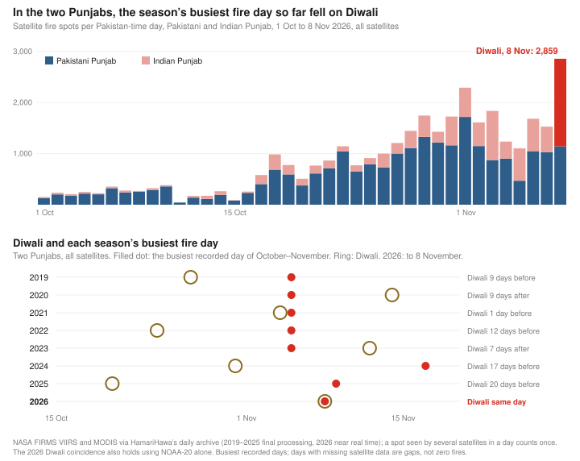
The hotspot archive does not measure fireworks emissions. What follows is what air monitors displayed in Lahore and Delhi, and in other Pakistani cities, and where modelled winds suggest the air went in between.
Lahore, hour by hour
IQAir reports Lahore's air as a single city figure, the median of the hourly concentrations of the stations reporting that hour. That figure was already high on Sunday. It stayed between 200 and 223 µg/m³ from midnight to 9 am, then fell to 137 in the afternoon as the day warmed and the smoke mixed upward. That is the usual daily rhythm in a Lahore November: worst at night and in the early morning, and best in mid-afternoon.
Sunday evening was little different from Sunday morning. The median of the station feeds was AQI 267 to 292 in each hour from 7 pm to midnight, against 294 at 9 am. The rise came after midnight. The city figure climbed every hour: 233 µg/m³ in the hour from midnight, 313 from 4 am, 398.5 from 9 am, 1.8 times the same hour on Sunday. Then it fell fast: 280 from 11 am, 186 from noon, 97 from 3 pm.
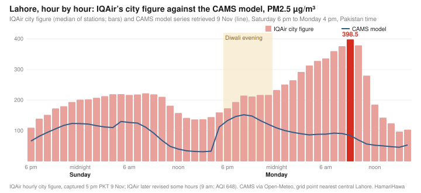
The rise shows across the city's station feeds. We read the history of each of the 52 Lahore stations linked from IQAir's city page; 49 had a reading at 9 am on both days. Of those, 48 were higher on Monday, and 26 had AQI+ readings at least twice as high. The median went from AQI 294 to 645, and 39 read above 500, which corresponds to 325.4 µg/m³ of PM2.5. The one feed that was not higher at 9 am, Ravi Road, had peaked at 457 in the hour from 4 am. Two feeds displayed readings above 1,000 during the morning: Allama Iqbal Town (1,063, from 10 am) and a monitor in the Quaid-e-Azam Industrial Estate (1,012, from 9 am). These are the values IQAir displayed; we have not checked the instruments.
Delhi on Diwali night
IQAir showed 30 station feeds for Delhi on 9 November. Its pages attribute 17 of them to the Central Pollution Control Board (their names end "- DPCC" or "- IITM"), 10 to the Delhi Pollution Control Committee (DPCC) directly, and 3 to private contributors.
All three private sensors, which read about AQI 210 to 220 at midday on Sunday, passed 1,000 during the night: VV Block C reached 1,206 in the hour from 10:30 pm, 1,682 from 11:30 pm and 2,089 from 4:30 am; Safdarjung Enclave reached 1,565 and Poorvi Marg 1,410. Three of the DPCC feeds also passed 1,000 on Sunday night, Vivek Vihar (1,591), Anand Vihar (1,380) and Sonia Vihar (1,085), and four DPCC feeds had passed 1,000 on Saturday night as well. Several DPCC feeds have long gaps, so they cannot show what every part of the city did.
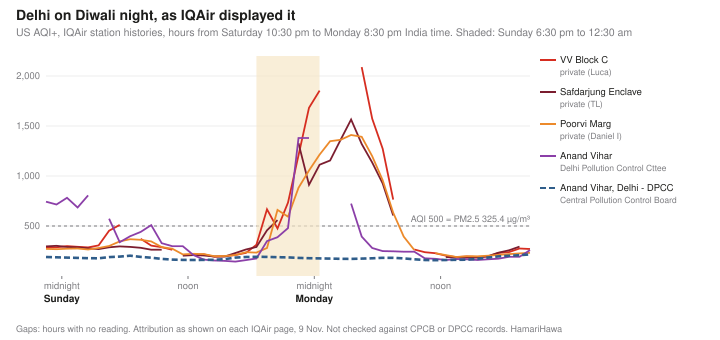
The 17 feeds attributed to the Central Pollution Control Board showed none of this. Their highest reading of the night was between 192 and 198. Sixteen of them formed two unusually similar groups: in the 13 readings from 6:30 pm on Sunday to 6:30 am on Monday, eleven displayed the same value in 12, and five matched in all 13. The remaining feed had a different series. Some name the same sites as DPCC feeds that rose above 1,000: IQAir's two feeds for Anand Vihar, for example, read 1,380 and 178 in the same hour. We do not know why. The feeds may draw on different instruments, different processing or a data problem somewhere along the way; we have not checked them against the official CPCB or DPCC records, and draw no conclusions from them. Amritsar and Ludhiana each had a single government feed on IQAir, and we do not use them either.
Multan and Faisalabad
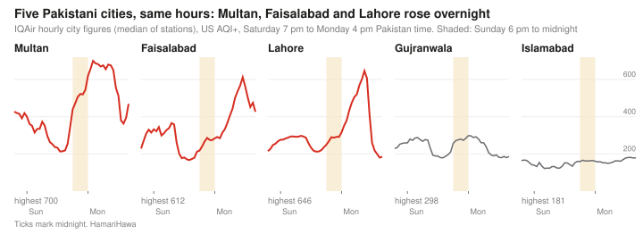
IQAir's city figure for Multan stayed above AQI 600 from the hour starting at midnight to the hour starting at 10 am, peaking at 700 at 2 am. Faisalabad's was above 500 from 8 am to 1 pm, peaking at 612 at 11 am. Gujranwala, 70 km north of Lahore, peaked at 298, barely above Saturday night's 288, and Islamabad stayed under 190. Only Lahore's stations were read one by one.
Warnings and forecasts
Punjab's Environment Protection Department warned of this in advance. According to a Dunya News report published at 4:50 pm on Sunday, the department issued a special report warning that air quality in Lahore, Kasur and the border areas could reach dangerous levels from Sunday night to Monday morning, worst until about 10 am Monday, and attributing this to Diwali fireworks, polluted winds from Indian Punjab, crop-residue burning and still night air. We have not found the department's original bulletin, so we rely on the news report; the department said it would publish a comparison of the measured effects on 10 November.
The Copernicus Atmosphere Monitoring Service (CAMS) model, which feeds many free air-quality apps including the forecast on this site, went the other way in the series we retrieved on Monday 9 November: it had Lahore falling from 148 µg/m³ at 9 pm on Sunday to 85 at 9 am on Monday, while IQAir's city figure rose from 212 to 398.5. We could not recover the run that was actually available on Sunday evening, so we cannot say what an app showed at that time. The two are also not like for like: the model gives one value for a grid cell about 40 km across, the city figure is the median of station feeds. In the hours we compared, Saturday night, the city figure read 1.5 to 2 times the model's.
CAMS estimates crop-fire smoke from the heat that satellites measure from fires. We have not established whether this model run included any extra emissions for Diwali fireworks; missing emissions, the model's winds and mixing, its coarse grid, or data issues could each explain part of the difference.
Where Lahore's air came from
Around Lahore, the modelled winds turned from the north-west to the east on Saturday evening and stayed light, averaging under 8 km/h through both nights. Following the modelled winds backwards suggests roughly where the air had been. We ran these paths at two levels: near the ground (10 m) and at the 925 hPa pressure level, several hundred metres up. At night the model's mixed layer over Lahore was only tens of metres deep, so the air at 925 hPa need not have reached the ground monitors.
Lahore. All eight modelled paths, for air arriving at midnight, 3 am, 6 am and 9 am on Monday at both levels, approached Lahore from the east and crossed from the Indian side during the preceding several hours. The air arriving at midnight was near Amritsar at 6 pm on Sunday; the air arriving at 9 am was 93 to 115 km east, over Kapurthala and eastern Tarn Taran districts, at 6 pm and near the town of Tarn Taran at midnight. Air arriving at 9 am on Sunday had come partly from the north-east near the ground and from the west, over Hafizabad and Nankana Sahib, at 925 hPa.
Faisalabad. The modelled air reaching Faisalabad on Monday morning was over Lahore from noon to 6 pm on Sunday, then drifted west across Sheikhupura and Nankana Sahib.
Multan. Near the ground, the modelled air reaching Multan was near Pakpattan on Sunday evening and crossed Vehari district overnight. At 925 hPa it came instead from Ganganagar in Indian Rajasthan.
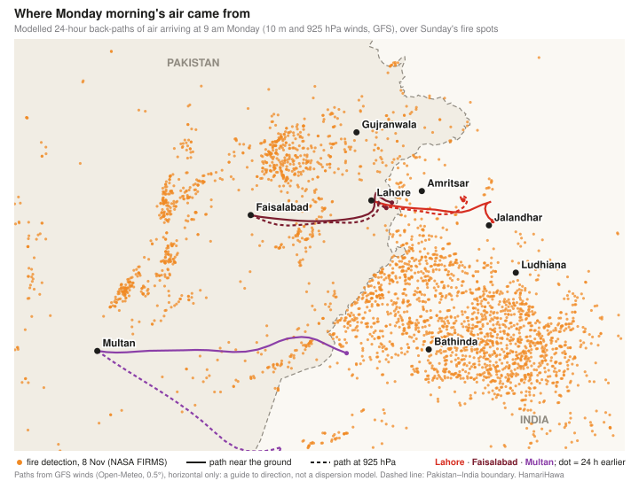
Counting satellite fire spots near these paths is a rough screen, not a measure of smoke. Within 20 km of Lahore's 9 am paths, in the 24 hours before the air passed, the archive recorded 42 to 47 spots, almost all in India; with a 10 km corridor about 20, and with a 40 km corridor 146 (126 in India, 20 in Pakistan). This is a screen on the recorded detection times, not a count of fires shown to have reached Lahore. Fewer spots along a path do not mean less smoke: a single large fire or a field burned between satellite passes can count for more than several small ones.
What the data can and cannot tell us
What was measured. IQAir's city figures for Lahore, Multan and Faisalabad rose sharply during the night of 8–9 November and the following morning, peaking at 700 in Multan at 2 am, 646 in Lahore at 9 am and 612 in Faisalabad at 11 am; Lahore's rise also shows station by station. In Delhi, private sensors and some DPCC feeds displayed readings above 1,000 from Sunday evening.
What the models suggest. Light east winds carried air from Indian Punjab towards Lahore through Sunday evening and night, and from Lahore towards Faisalabad. These paths are approximate, and the upper path may not have reached the ground.
What changed on Sunday. Indian Punjab's fire count rose sharply, and it was Diwali night. In the GFS weather model, Lahore's Sunday night was not stiller than Saturday night's (7.3 km/h on average, against 4.6), but averages do not capture everything that traps smoke, and the model is not a measurement.
Humidity. Low-cost sensors can read high in damp air, and IQAir applies corrections for this. Lahore's relative humidity in the model stayed below 40% through the night, which makes a humidity effect less likely, without ruling out other sensor problems.
Fireworks, the smoke of the season's busiest fire day so far, Lahore's own emissions and pollution built up over previous days are all possible contributors. Delhi's Diwali-night readings are consistent with a fireworks contribution; these feeds do not establish its share, or its effect on Lahore, and the data here cannot say what share of Lahore's 398.5 came from any source or country.
What could test it
Fireworks leave chemical traces, such as potassium and metals like strontium, barium and copper that give them colour, though some of these also have other sources. If suitable particle samples were kept from Lahore and the other cities for the days before and after Diwali, analysing them for several markers at once and combining the results with a source-apportionment analysis and transport modelling, such as NOAA's HYSPLIT, could help estimate how much each source contributed. Whether the Environment Protection Department's monitors kept usable samples is something only the department can say. Its promised comparison of measured effects, and the original Sunday bulletin with its issue time, would add to the public record.
Method and sources
Air quality: IQAir city and station pages, History, Hourly, US AQI⁺ and PM2.5. IQAir's city figure is the median of the hourly concentrations of the stations reporting that hour (IQAir data computation). City figures were captured at about 5 pm Pakistan time on 9 November; every Lahore and Delhi station history was captured again between 9:40 and 9:45 pm Pakistan time, and the station figures above come from that capture. Hours are given by their start, as in IQAir's hover labels (for example, "09:00–10:00"). IQAir revised some hours between captures: Lahore's 9 am city figure later showed AQI 648. US AQI is computed from PM2.5 with the US EPA's current breakpoints: 398.5 µg/m³ gives 646.
Delhi feeds: attribution as printed on each station's IQAir page ("Station from …") on 9 November. Coordinates and instrument types were not shown and not captured.
Fires: NASA FIRMS VIIRS (NOAA-20, NOAA-21; Suomi NPP until its data ended on 2 November 2026) and MODIS detections, merged by HamariHawa's daily archive: VIIRS detections falling in the same grid cell of about 400 m on the same Pakistan-time day count once, and MODIS detections near a VIIRS spot are dropped. Counts are spots, not unique fires or fields. Seasons 2019–2025 use NASA's standard (final) processing; 2026 uses near-real-time data. Days when NOAA-20 data are missing, such as 1 October 2023, are treated as gaps, not as days without fires; the busiest days given are the busiest recorded. Daily totals and states from hamarihawa.org/api/day. Season comparisons use October and November of each year, for the two Punjabs, on all satellites and on NOAA-20 alone; 2026 runs to 8 November.
Weather and air paths: GFS via Open-Meteo, hourly wind at 10 m and 925 hPa requested on a 0.5° grid, and mixing-layer height, temperature and humidity at each city, retrieved 9 November. Paths step back every 15 minutes for 24 hours, interpolating the east–west and north–south wind components; they are horizontal only. Border crossings use the same country outlines as the map, checked at each 15-minute step. Fire spots were counted within 10, 20 and 40 km of a path, checked every 30 minutes along it, detected in the 24 hours before the air passed; the archive keeps one time per merged spot.
Model: CAMS global PM2.5 via the Open-Meteo air-quality API, grid point nearest central Lahore, series retrieved on 9 November; not the run available on 8 November.
Warning: Dunya News (Urdu), دیوالی کی آتشبازی، بھارت سے آنیوالی آلودہ ہواؤں سے لاہور میں سموگ مزید بڑھنے کا خدشہ ("Diwali fireworks and polluted winds from India threaten more smog in Lahore"), 8 November 2026, 4:50 pm (urdu.dunyanews.tv).
Diwali: Sunday 8 November 2026 (India Post holiday list). Earlier years: 27 October 2019, 14 November 2020, 4 November 2021, 24 October 2022, 12 November 2023, 31 October 2024 and 20 October 2025, the main day of Lakshmi Puja (some observed it on 1 November in 2024 and 21 October in 2025).
The raw captures behind every chart and table, and the scripts that make them, are in the site's repository under scripts/reports/lahore-morning-after-diwali/.
ہر سال خزاں میں انسانوں کے دو کام دونوں پنجابوں کی فضا میں دھواں بھرتے ہیں: کسانوں کا فصلوں کی باقیات جلانا، اور دیوالی کی آتش بازی۔ اس بار یہ دونوں ایک ہی دن آن پڑے۔ اتوار 8 نومبر کو، جو دیوالی کا دن تھا، سیٹلائٹ نے پاکستانی اور ہندوستانی پنجاب میں آگ کے 2,859 مقامات دیکھے، جو اس سیزن میں اب تک کسی بھی دن سے زیادہ ہیں؛ 2019 سے 2025 تک کے سات سیزنوں میں ایک بار بھی آگ کا سب سے بڑا دن دیوالی پر نہیں پڑا تھا۔ اسی رات دہلی میں نجی سینسروں نے US AQI کی 1,000 سے زیادہ ریڈنگز دکھائیں، جو 2,089 تک گئیں۔ لاہور میں IQAir کا شہری عدد آدھی رات کے بعد پوری رات چڑھتا رہا اور پیر کی صبح 9 بجے باریک ذرات (PM2.5) کی مقدار 398.5 µg/m³ تک جا پہنچی، یعنی US AQI 646، جبکہ اتوار کو اسی وقت یہ 219 تھی۔ ملتان اور فیصل آباد میں بھی آلودگی بڑھی۔ دنیا نیوز کی ایک خبر کے مطابق پنجاب کے محکمہ تحفظ ماحولیات نے اتوار کی سہ پہر اس کی پیشگی وارننگ دے دی تھی؛ اس کے برعکس پیر کو ہم نے CAMS ماڈل کی جو سیریز حاصل کی، اس میں رات بھر لاہور کی فضا صاف ہوتی دکھائی گئی تھی۔ یہ اعداد و شمار یہ نہیں بتا سکتے کہ پیر کی صبح کی آلودگی میں کتنا حصہ فصلوں کی آگ کا تھا، کتنا سرحد کے دونوں طرف کی آتش بازی کا، اور کتنا خود لاہور کا۔
2,859دیوالی، 8 نومبر کو دونوں پنجابوں میں سیٹلائٹ سے دیکھے گئے آگ کے مقامات: اس سیزن میں اب تک سب سے زیادہ
398.5µg/m³ PM2.5، پیر صبح 9 بجے IQAir کا لاہور کا شہری عدد (AQI 646)، ایک دن پہلے 219
48/49IQAir پر لاہور کی 49 میں سے 48 اسٹیشن فیڈز میں پیر صبح 9 بجے کی ریڈنگ اتوار صبح 9 بجے سے زیادہ
2,089US AQI، دیوالی کی رات دہلی کے ان تین نجی سینسروں میں سب سے اونچی ریڈنگ جو 1,000 سے اوپر گئے
اس رپورٹ کو خود جانچیں۔ اس رپورٹ کا ہر عدد data.json میں موجود ہے، اپنے ماخذ، حاصل کرنے کے وقت، جگہ، اکائی اور طریقے کے ساتھ، اور خام ڈیٹا اور اسکرپٹ بھی ساتھ رکھے گئے ہیں۔ فضا کی ریڈنگز وہ ہیں جو IQAir نے 9 نومبر کو دکھائیں؛ ان کی الگ سے جانچ نہیں ہوئی، اور IQAir کچھ گھنٹوں کے اعداد پہلی بار دکھانے کے بعد بدل بھی دیتا ہے۔ آگ کی گنتی ناسا کے سیٹلائٹ کی حرارت کی نشاندہیاں ہیں جنہیں مقامات میں جوڑا گیا ہے، تصدیق شدہ آگ نہیں۔ ہوا کے راستے موسمیاتی ماڈل کی ہواؤں پر چلائے گئے ایک سادہ حساب سے نکالے گئے ہیں، یہ پیمائش نہیں، صرف اندازہ ہیں۔ یہ نگرانی کی رپورٹ ہے: اس میں وہی بیان کیا گیا ہے جو آلات اور ماڈل دکھاتے ہیں، اور صاف لکھا گیا ہے کہ وہ کن چیزوں کو الگ الگ نہیں کر سکتے۔
ایک دن، دو واقعات
دونوں پنجابوں میں فصلوں کو آگ لگانے کا سلسلہ اکتوبر کے آخر تک زور پکڑتا ہے اور عموماً نومبر کے پہلے پندرہ دنوں میں عروج پر ہوتا ہے۔ دیوالی قمری کیلنڈر کے حساب سے آتی ہے اور اکتوبر کے وسط سے نومبر کے وسط کے درمیان کسی بھی دن پڑ سکتی ہے۔ 2019 سے 2025 تک کے سات سیزنوں میں دونوں پنجابوں میں اکتوبر اور نومبر کا سب سے بڑا دن کبھی دیوالی پر نہیں پڑا؛ سب سے قریب 2021 رہا، جب تمام سیٹلائٹ کی گنتی میں دیوالی اس دن سے ایک دن پہلے تھی۔ اس سال، 8 نومبر تک کے ریکارڈ میں، دونوں ایک ہی دن آئے۔
روزانہ آگ کے مقامات (پاکستانی وقت کے مطابق دن)، ناسا FIRMS (VIIRS اور MODIS)، ہر طرح کی زمین
دن
پاکستانی پنجاب
ہندوستانی پنجاب
دونوں پنجاب
دونوں پنجاب، صرف NOAA-20
جمعہ 6 نومبر
1,050
635
1,685
412
ہفتہ 7 نومبر
1,029
501
1,530
659
اتوار 8 نومبر (دیوالی)
1,143
1,716
2,859
931
اتوار کا اضافہ ہندوستانی پنجاب میں ہوا، جہاں تمام سیٹلائٹ کی گنتی ہفتے کے مقابلے میں تین گنا سے بھی زیادہ ہو گئی، اور سب سے زیادہ آگ سنگرور (245)، بٹھنڈا (213) اور فیروزپور (207) میں رہی۔ صرف ایک سیٹلائٹ، NOAA-20، کی گنتی میں، جو مختلف دنوں اور برسوں کا سب سے منصفانہ موازنہ دیتی ہے، ہندوستانی پنجاب میں تقریباً دو تہائی اضافہ ہوا۔ پاکستانی پنجاب پچھلے دنوں کی سطح کے آس پاس رہا، جس میں جھنگ (287) اور حافظ آباد (193) سرفہرست تھے؛ یہاں اب تک کا سب سے بڑا دن 1 نومبر تھا، جب آگ کے 1,719 مقامات ریکارڈ ہوئے۔ ہم نے جتنے پیمانوں سے جانچا، اتوار ہر ایک میں اب تک کا سب سے زیادہ ریکارڈ شدہ دن نکلا: تمام سیٹلائٹ ہوں یا صرف NOAA-20، دونوں پنجاب ہوں یا دونوں ملک پورے کے پورے۔ سیزن ابھی ختم نہیں ہوا۔ 2024 میں سب سے بڑا دن 17 نومبر کو آیا تھا، اس لیے اتوار کا یہ عدد ابھی پیچھے چھوٹ سکتا ہے۔
NOAA-20 کی گنتی کے حساب سے یہ سیزن ابھی 2019–2022 سے بہت نیچے ہے، جب دونوں پنجابوں میں سب سے بڑے ریکارڈ شدہ دن آگ کے 4,268 سے 6,483 مقامات تک پہنچے تھے۔ اتوار کا 931 کا عدد 2025 کے سب سے بڑے دن (911) کے قریب ہے، لیکن پچھلے سیزنوں کا ڈیٹا ناسا کا حتمی ڈیٹا ہے اور اس سیزن کا فوری (near real time) ڈیٹا، اس لیے یہ موازنہ ابھی عارضی ہے۔
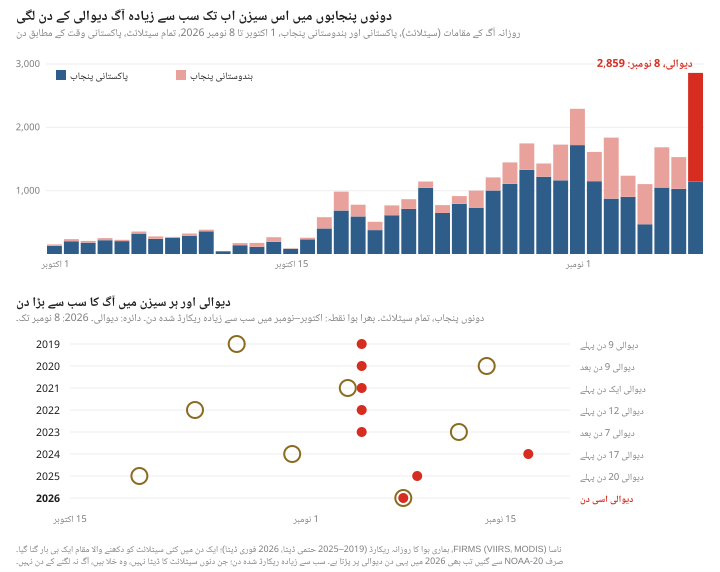
آگ کی نشاندہیوں کا یہ ریکارڈ آتش بازی کا دھواں نہیں ناپتا۔ آگے وہ ہے جو لاہور، دہلی اور پاکستان کے دوسرے شہروں میں فضائی مانیٹروں نے دکھایا، اور یہ کہ ماڈل کی ہوائیں درمیان میں ہوا کو کس طرف لے جاتی دکھائی دیتی ہیں۔
لاہور، گھنٹہ بہ گھنٹہ
IQAir لاہور کی فضا کو ایک شہری عدد کی صورت میں دکھاتا ہے، جو اس گھنٹے ریڈنگ دینے والے اسٹیشنوں کی گھنٹہ وار مقدار کا میڈین ہوتا ہے۔ اتوار کو بھی یہ عدد اونچا تھا۔ آدھی رات سے صبح 9 بجے تک یہ 200 سے 223 µg/m³ کے درمیان رہا، پھر دن گرم ہونے اور دھوئیں کے اوپر پھیلنے سے سہ پہر تک 137 پر آ گیا۔ نومبر میں لاہور کا یہی معمول ہے: رات اور صبح سویرے سب سے برا حال، اور سہ پہر کو سب سے بہتر۔
اتوار کی شام صبح سے کچھ زیادہ مختلف نہیں تھی۔ شام 7 بجے سے آدھی رات تک ہر گھنٹے اسٹیشن فیڈز کا میڈین AQI 267 سے 292 کے درمیان رہا، جبکہ صبح 9 بجے یہ 294 تھا۔ اصل اضافہ آدھی رات کے بعد ہوا۔ شہری عدد ہر گھنٹے بڑھتا گیا: آدھی رات والے گھنٹے میں 233 µg/m³، صبح 4 بجے والے گھنٹے میں 313، اور صبح 9 بجے والے گھنٹے میں 398.5، یعنی اتوار کے اسی گھنٹے کا 1.8 گنا۔ اس کے بعد یہ تیزی سے گرا: 11 بجے 280، دوپہر 12 بجے 186، اور سہ پہر 3 بجے 97۔
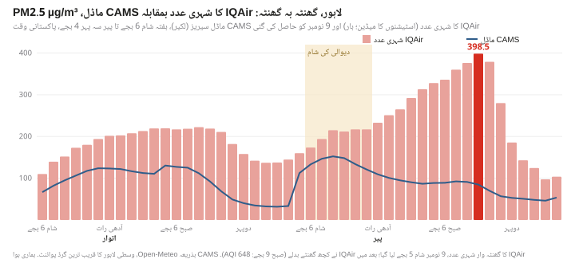
یہ اضافہ شہر کی تقریباً ہر اسٹیشن فیڈ میں نظر آتا ہے۔ ہم نے IQAir کے شہری صفحے سے جڑے لاہور کے تمام 52 اسٹیشنوں کا ریکارڈ پڑھا؛ ان میں سے 49 کی دونوں دن صبح 9 بجے کی ریڈنگ موجود تھی۔ ان میں سے 48 میں پیر کی ریڈنگ زیادہ تھی، اور 26 میں AQI+ کی ریڈنگ کم از کم دگنی تھی۔ میڈین AQI 294 سے بڑھ کر 645 ہو گیا، اور 39 فیڈز 500 سے اوپر تھیں، جو PM2.5 کے 325.4 µg/m³ کے برابر ہے۔ جو ایک فیڈ صبح 9 بجے زیادہ نہیں تھی، یعنی راوی روڈ، وہ صبح 4 بجے والے گھنٹے میں 457 پر اپنی چوٹی چھو چکی تھی۔ صبح کے وقت دو فیڈز نے 1,000 سے اوپر کی ریڈنگ دکھائی: علامہ اقبال ٹاؤن (1,063، صبح 10 بجے والے گھنٹے میں) اور قائدِ اعظم انڈسٹریل اسٹیٹ کا ایک مانیٹر (1,012، صبح 9 بجے والے گھنٹے میں)۔ یہ وہ اعداد ہیں جو IQAir نے دکھائے؛ ہم نے آلات کی جانچ نہیں کی۔
دیوالی کی رات دہلی
9 نومبر کو IQAir پر دہلی کی 30 اسٹیشن فیڈز تھیں۔ IQAir کے صفحات کے مطابق ان میں سے 17 سینٹرل پولوشن کنٹرول بورڈ (CPCB) سے منسوب ہیں (ان کے نام کے آخر میں "- DPCC" یا "- IITM" لکھا ہے)، 10 براہِ راست دہلی پولوشن کنٹرول کمیٹی (DPCC) سے، اور 3 نجی افراد سے۔
تینوں نجی سینسر، جو اتوار کی دوپہر AQI تقریباً 210 سے 220 پر تھے، رات کو 1,000 سے اوپر چلے گئے: وی وی بلاک سی رات 10:30 والے گھنٹے میں 1,206، 11:30 والے میں 1,682 اور صبح 4:30 والے میں 2,089 تک پہنچا؛ صفدر جنگ انکلیو 1,565 اور پوروی مارگ 1,410 تک گئے۔ DPCC کی تین فیڈز بھی اتوار کی رات 1,000 سے اوپر گئیں: وویک وہار (1,591)، آنند وہار (1,380) اور سونیا وہار (1,085)؛ اور DPCC کی چار فیڈز ہفتے کی رات بھی 1,000 پار کر چکی تھیں۔ DPCC کی کئی فیڈز میں لمبے وقفے ہیں، اس لیے وہ یہ نہیں بتا سکتیں کہ شہر کے ہر حصے میں کیا ہوا۔
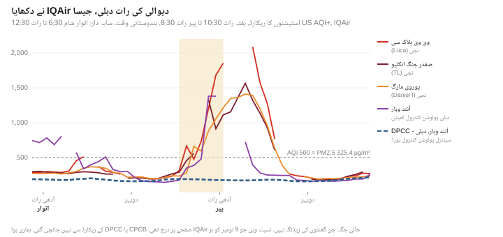
سینٹرل پولوشن کنٹرول بورڈ سے منسوب 17 فیڈز میں ایسا کچھ نظر نہیں آیا۔ رات بھر ان کی سب سے اونچی ریڈنگ 192 سے 198 کے درمیان رہی۔ ان میں سے سولہ فیڈز دو ایسے گروپوں میں بٹی تھیں جو غیر معمولی حد تک ایک جیسے تھے: اتوار شام 6:30 سے پیر صبح 6:30 تک کی 13 ریڈنگز میں، گیارہ فیڈز نے 12 بار بالکل ایک ہی عدد دکھایا، اور پانچ فیڈز تمام 13 بار ایک جیسی رہیں۔ باقی ایک فیڈ کی سیریز الگ تھی۔ ان میں سے کچھ کے نام انہی جگہوں کے ہیں جن کی DPCC فیڈز 1,000 سے اوپر گئیں: مثال کے طور پر IQAir پر آنند وہار کی دو فیڈز نے ایک ہی گھنٹے میں 1,380 اور 178 دکھایا۔ ہمیں اس کی وجہ معلوم نہیں۔ ممکن ہے یہ فیڈز مختلف آلات سے آتی ہوں، ان پر مختلف طرح سے کام ہوتا ہو، یا راستے میں کہیں ڈیٹا کا کوئی مسئلہ ہو؛ ہم نے انہیں CPCB یا DPCC کے سرکاری ریکارڈ سے نہیں ملایا، اور ان سے کوئی نتیجہ اخذ نہیں کرتے۔ امرتسر اور لدھیانہ کی IQAir پر ایک ایک سرکاری فیڈ تھی، اور انہیں بھی ہم استعمال نہیں کرتے۔
ملتان اور فیصل آباد
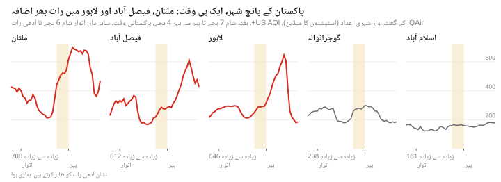
ملتان کے لیے IQAir کا شہری عدد آدھی رات والے گھنٹے سے صبح 10 بجے والے گھنٹے تک AQI 600 سے اوپر رہا، اور رات 2 بجے 700 کی چوٹی پر پہنچا۔ فیصل آباد صبح 8 بجے سے دوپہر 1 بجے تک 500 سے اوپر رہا، اور صبح 11 بجے 612 تک گیا۔ لاہور سے 70 کلومیٹر شمال میں گوجرانوالہ زیادہ سے زیادہ 298 تک گیا، جو ہفتے کی رات کے 288 سے بس تھوڑا سا اوپر ہے، اور اسلام آباد 190 سے نیچے رہا۔ صرف لاہور کے اسٹیشن الگ الگ پڑھے گئے۔
وارننگ اور پیش گوئیاں
پنجاب کے محکمہ تحفظ ماحولیات نے اس کی پیشگی وارننگ دی تھی۔ اتوار کی سہ پہر 4:50 بجے شائع ہونے والی دنیا نیوز کی خبر کے مطابق، محکمے نے ایک خصوصی رپورٹ جاری کی جس میں خبردار کیا گیا کہ لاہور، قصور اور سرحدی علاقوں میں اتوار کی رات سے پیر کی صبح تک فضائی آلودگی خطرناک حد تک بڑھ سکتی ہے، اور پیر صبح تقریباً 10 بجے تک سب سے زیادہ رہے گی؛ اس کی وجہ دیوالی کی آتش بازی، ہندوستانی پنجاب سے آنے والی آلودہ ہوائیں، فصلوں کی باقیات کو آگ لگانا اور رات کی ساکن ہوا بتائی گئی۔ ہمیں محکمے کا اصل بلیٹن نہیں ملا، اس لیے ہم خبر پر انحصار کر رہے ہیں؛ محکمے نے کہا تھا کہ وہ 10 نومبر کو اصل پیمائش پر مبنی تقابلی رپورٹ جاری کرے گا۔
کوپرنیکس اٹموسفیئر مانیٹرنگ سروس (CAMS) کا ماڈل، جس پر بہت سی مفت ایئر کوالٹی ایپس چلتی ہیں، اور اس ویب سائٹ کی پیش گوئی بھی، اس سیریز میں الٹی سمت گیا جو ہم نے پیر 9 نومبر کو حاصل کی: اس میں لاہور اتوار رات 9 بجے 148 µg/m³ سے گر کر پیر صبح 9 بجے 85 پر آ گیا، جبکہ IQAir کا شہری عدد 212 سے بڑھ کر 398.5 ہو گیا۔ اتوار کی شام اصل میں ماڈل کا جو رن دستیاب تھا، وہ ہم حاصل نہیں کر سکے، اس لیے یہ نہیں کہہ سکتے کہ اس وقت ایپس پر کیا دکھائی دے رہا تھا۔ دونوں کا موازنہ برابر کا بھی نہیں: ماڈل تقریباً 40 کلومیٹر چوڑے ایک خانے کا ایک عدد دیتا ہے، جبکہ شہری عدد اسٹیشن فیڈز کا میڈین ہے۔ جن گھنٹوں کا ہم نے موازنہ کیا، یعنی ہفتے کی رات، ان میں شہری عدد ماڈل سے 1.5 سے 2 گنا رہا۔
CAMS فصلوں کی آگ کے دھوئیں کا اندازہ اس حرارت سے لگاتا ہے جو سیٹلائٹ آگ سے ناپتے ہیں۔ ہم یہ معلوم نہیں کر سکے کہ ماڈل کے اس رن میں دیوالی کی آتش بازی کا کوئی اضافی اخراج شامل تھا یا نہیں؛ اخراج کا نہ ہونا، ماڈل کی ہوائیں اور ان کا ملاپ، اس کا موٹا گرڈ، یا ڈیٹا کے مسائل، ان میں سے ہر ایک فرق کے کچھ حصے کی وضاحت کر سکتا ہے۔
لاہور کی ہوا کہاں سے آئی
لاہور کے اردگرد ماڈل کی ہوائیں ہفتے کی شام شمال مغرب سے مڑ کر مشرق سے چلنے لگیں اور ہلکی رہیں، دونوں راتوں میں اوسطاً 8 کلومیٹر فی گھنٹہ سے کم۔ ماڈل کی ہواؤں کو الٹا چلا کر موٹا اندازہ ہوتا ہے کہ ہوا پہلے کہاں تھی۔ ہم نے یہ راستے دو سطحوں پر نکالے: زمین کے قریب (10 میٹر) اور 925 hPa دباؤ کی سطح پر، جو زمین سے کئی سو میٹر اوپر ہے۔ رات کو ماڈل کے مطابق لاہور کے اوپر ہوا کی گھلنے ملنے والی تہہ صرف چند دسیوں میٹر گہری تھی، اس لیے ضروری نہیں کہ 925 hPa کی ہوا زمینی مانیٹروں تک پہنچی ہو۔
لاہور۔ ماڈل کے تمام آٹھ راستے، یعنی پیر کو آدھی رات، صبح 3، 6 اور 9 بجے دونوں سطحوں پر پہنچنے والی ہوا کے، مشرق سے لاہور آئے اور اس سے پہلے کے کئی گھنٹوں میں ہندوستان کی طرف سے سرحد پار کی۔ آدھی رات کو پہنچنے والی ہوا اتوار شام 6 بجے امرتسر کے قریب تھی؛ صبح 9 بجے پہنچنے والی ہوا شام 6 بجے 93 سے 115 کلومیٹر مشرق میں، کپورتھلہ اور مشرقی ترن تارن کے اضلاع کے اوپر تھی، اور آدھی رات کو ترن تارن شہر کے قریب۔ اتوار صبح 9 بجے پہنچنے والی ہوا زمین کے قریب کچھ شمال مشرق سے آئی تھی، اور 925 hPa پر مغرب سے، حافظ آباد اور ننکانہ صاحب کے اوپر سے۔
فیصل آباد۔ پیر کی صبح فیصل آباد پہنچنے والی ہوا، ماڈل کے مطابق، اتوار دوپہر 12 سے شام 6 بجے تک لاہور کے اوپر تھی، پھر شیخوپورہ اور ننکانہ صاحب کے اوپر سے مغرب کی طرف بڑھی۔
ملتان۔ زمین کے قریب ملتان پہنچنے والی ہوا اتوار کی شام پاکپتن کے قریب تھی اور رات کو ضلع وہاڑی سے گزری۔ 925 hPa پر یہ ہوا ہندوستانی راجستھان کے گنگا نگر کی طرف سے آئی۔
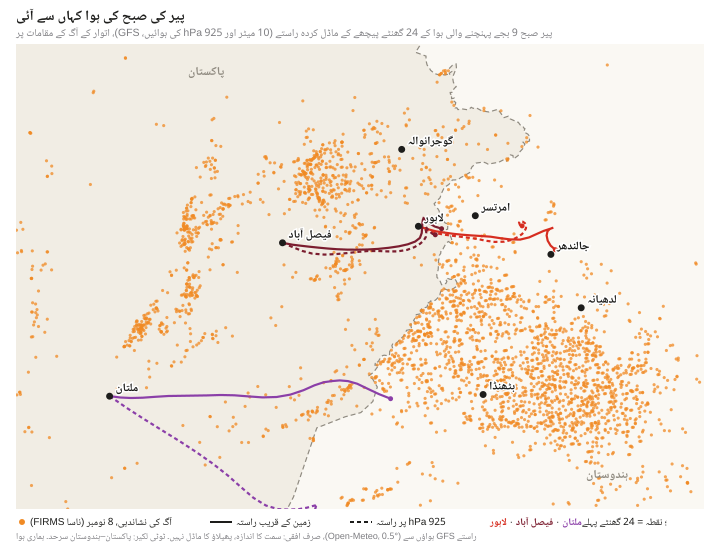
ان راستوں کے قریب آگ کے مقامات گننا صرف ایک موٹی چھان پھٹک ہے، دھوئیں کی پیمائش نہیں۔ لاہور پہنچنے والی صبح 9 بجے کی ہوا کے راستوں کے 20 کلومیٹر کے اندر، ہوا کے گزرنے سے پہلے کے 24 گھنٹوں میں، ریکارڈ میں آگ کے 42 سے 47 مقامات تھے، تقریباً سب ہندوستان میں؛ 10 کلومیٹر کی پٹی میں تقریباً 20، اور 40 کلومیٹر کی پٹی میں 146 (126 ہندوستان میں، 20 پاکستان میں)۔ یہ ریکارڈ شدہ وقت پر کی گئی چھان پھٹک ہے، ان آگوں کی گنتی نہیں جن کا دھواں لاہور پہنچنا ثابت ہو۔ کسی راستے پر کم مقامات کا مطلب کم دھواں نہیں: ایک بڑی آگ، یا سیٹلائٹ کے دو چکروں کے بیچ جلا ہوا ایک کھیت، کئی چھوٹی آگوں سے زیادہ اثر رکھ سکتا ہے۔
اعداد و شمار کیا بتاتے ہیں اور کیا نہیں
کیا ناپا گیا۔ لاہور، ملتان اور فیصل آباد کے لیے IQAir کے شہری اعداد 8 اور 9 نومبر کی درمیانی رات اور اگلی صبح تیزی سے بڑھے: ملتان رات 2 بجے 700، لاہور صبح 9 بجے 646 اور فیصل آباد صبح 11 بجے 612 تک گیا؛ لاہور میں یہ اضافہ ایک ایک اسٹیشن میں بھی نظر آتا ہے۔ دہلی میں نجی سینسروں اور DPCC کی کچھ فیڈز نے اتوار کی شام سے 1,000 سے اوپر کی ریڈنگز دکھائیں۔
ماڈل کیا کہتے ہیں۔ مشرق کی ہلکی ہوائیں اتوار کی شام اور رات بھر ہندوستانی پنجاب سے ہوا لاہور کی طرف، اور لاہور سے فیصل آباد کی طرف لے گئیں۔ یہ راستے اندازاً ہیں، اور ہو سکتا ہے اوپر والا راستہ زمین تک نہ پہنچا ہو۔
اتوار کو کیا بدلا۔ ہندوستانی پنجاب میں آگ کی گنتی تیزی سے بڑھی، اور وہ دیوالی کی رات تھی۔ GFS موسمیاتی ماڈل میں لاہور کی اتوار کی رات ہفتے کی رات سے زیادہ ساکن نہیں تھی (اوسطاً 7.3 کلومیٹر فی گھنٹہ، مقابلے میں 4.6)، لیکن اوسط وہ سب کچھ نہیں بتاتی جو دھوئیں کو روک لیتا ہے، اور ماڈل پیمائش نہیں ہے۔
نمی۔ کم قیمت سینسر نم ہوا میں زیادہ ریڈنگ دے سکتے ہیں، اور IQAir اس کی درستی کرتا ہے۔ ماڈل کے مطابق رات بھر لاہور کی ہوا میں نمی کا تناسب 40% سے کم رہا، جس سے نمی کا اثر کم امکان والا ہو جاتا ہے، اگرچہ اس سے سینسر کے دوسرے مسائل خارج نہیں ہوتے۔
آتش بازی، اس سیزن کے اب تک کے سب سے بڑے آگ والے دن کا دھواں، لاہور کا اپنا اخراج اور پچھلے دنوں سے جمع ہوتی آلودگی، یہ سب ممکنہ اسباب ہیں۔ دیوالی کی رات دہلی کی ریڈنگز آتش بازی کے حصے سے مطابقت رکھتی ہیں؛ یہ فیڈز نہ اس حصے کی مقدار طے کرتی ہیں نہ لاہور پر اس کا اثر، اور یہاں کے اعداد و شمار یہ نہیں بتا سکتے کہ لاہور کے 398.5 میں کس ذریعے یا کس ملک کا کتنا حصہ تھا۔
یہ کیسے پرکھا جا سکتا ہے
آتش بازی اپنے پیچھے کیمیائی نشان چھوڑتی ہے، جیسے پوٹاشیم اور اسٹرونشیم، بیریم اور تانبے جیسی دھاتیں جو اسے رنگ دیتی ہیں، اگرچہ ان میں سے کچھ کے دوسرے ذرائع بھی ہیں۔ اگر لاہور اور دوسرے شہروں سے دیوالی سے پہلے اور بعد کے دنوں کے ذرات کے مناسب نمونے محفوظ کیے گئے ہوں، تو ان میں ایک ساتھ کئی نشانوں کا تجزیہ کر کے، اور نتائج کو ذرائع کی تقسیم کے تجزیے (source apportionment) اور ہوا کے بہاؤ کے ماڈل، جیسے NOAA کے HYSPLIT، کے ساتھ ملا کر یہ اندازہ لگانے میں مدد مل سکتی ہے کہ کس ذریعے کا کتنا حصہ تھا۔ محکمہ تحفظ ماحولیات کے مانیٹروں نے قابلِ استعمال نمونے رکھے یا نہیں، یہ صرف محکمہ ہی بتا سکتا ہے۔ اس کی وعدہ کردہ تقابلی رپورٹ، اور اتوار کا اصل بلیٹن اس کے جاری ہونے کے وقت کے ساتھ، عوامی ریکارڈ میں اضافہ کریں گے۔
ہم نے یہ کام کیسے کیا
فضائی معیار: IQAir کے شہری اور اسٹیشن صفحات، History، Hourly، US AQI⁺ اور PM2.5۔ IQAir کا شہری عدد اس گھنٹے ریڈنگ دینے والے اسٹیشنوں کی گھنٹہ وار مقدار کا میڈین ہے (IQAir کا طریقۂ حساب)۔ شہری اعداد 9 نومبر کو پاکستانی وقت کے مطابق تقریباً شام 5 بجے لیے گئے؛ لاہور اور دہلی کے ہر اسٹیشن کا ریکارڈ رات 9:40 سے 9:45 بجے کے درمیان دوبارہ لیا گیا، اور اوپر دیے گئے اسٹیشن کے اعداد اسی سے ہیں۔ گھنٹے ان کے شروع ہونے کے وقت سے بتائے گئے ہیں، جیسا کہ IQAir کے لیبلز میں ہوتا ہے (مثلاً "09:00–10:00")۔ دونوں بار کے درمیان IQAir نے کچھ گھنٹوں کے اعداد بدلے: بعد میں لاہور کا صبح 9 بجے کا شہری عدد AQI 648 دکھا رہا تھا۔ US AQI امریکی EPA کے موجودہ پیمانوں سے PM2.5 سے نکالا گیا ہے: 398.5 µg/m³ کا مطلب 646۔
دہلی کی فیڈز: نسبت وہی جو 9 نومبر کو ہر اسٹیشن کے IQAir صفحے پر لکھی تھی ("Station from …")۔ مقامات کے نقاط اور آلات کی قسم صفحات پر نہیں تھی اور حاصل نہیں کی گئی۔
آگ: ناسا FIRMS کی VIIRS (NOAA-20، NOAA-21؛ Suomi NPP جب تک 2 نومبر 2026 کو اس کا ڈیٹا بند نہیں ہوا) اور MODIS نشاندہیاں، جنہیں ہماری ہوا کے روزانہ ریکارڈ میں جوڑا گیا: پاکستانی وقت کے ایک ہی دن میں تقریباً 400 میٹر کے ایک ہی گرڈ خانے میں آنے والی VIIRS نشاندہیاں ایک بار گنی جاتی ہیں، اور VIIRS مقام کے قریب MODIS نشاندہیاں چھوڑ دی جاتی ہیں۔ یہ گنتی مقامات کی ہے، الگ الگ آگوں یا کھیتوں کی نہیں۔ 2019–2025 کے سیزن ناسا کے معیاری (حتمی) ڈیٹا سے ہیں؛ 2026 فوری ڈیٹا سے۔ جن دنوں NOAA-20 کا ڈیٹا نہیں، جیسے 1 اکتوبر 2023، انہیں خلا سمجھا گیا ہے، آگ نہ لگنے کا دن نہیں؛ سب سے بڑے دن وہ ہیں جو ریکارڈ میں سب سے بڑے ہیں۔ روزانہ گنتی اور صوبے hamarihawa.org/api/day سے۔ سیزنوں کا موازنہ ہر سال کے اکتوبر اور نومبر کا ہے، دونوں پنجابوں کے لیے، تمام سیٹلائٹ اور صرف NOAA-20 دونوں پر؛ 2026 کا ڈیٹا 8 نومبر تک ہے۔
موسم اور ہوا کے راستے: Open-Meteo کے ذریعے GFS، 10 میٹر اور 925 hPa پر گھنٹہ وار ہوا 0.5° کے گرڈ پر، اور ہر شہر میں ہوا کی گھلنے ملنے والی تہہ کی اونچائی، درجہ حرارت اور نمی، 9 نومبر کو حاصل کیے گئے۔ راستے 24 گھنٹے تک ہر 15 منٹ پیچھے جاتے ہیں، اور ہوا کے مشرق–مغرب اور شمال–جنوب حصوں کو الگ الگ ملا کر نکالے گئے ہیں؛ یہ صرف افقی ہیں۔ سرحد پار کرنے کا پتہ نقشے والی ملکی حدود سے ہر 15 منٹ کے قدم پر لگایا گیا۔ آگ کے مقامات کسی راستے کے 10، 20 اور 40 کلومیٹر کے اندر گنے گئے، راستے پر ہر 30 منٹ پر جانچ کر، اور ہوا کے گزرنے سے پہلے کے 24 گھنٹوں میں؛ ریکارڈ ہر جوڑے گئے مقام کا ایک ہی وقت رکھتا ہے۔
ماڈل: Open-Meteo کے ایئر کوالٹی API سے CAMS عالمی PM2.5، وسطی لاہور کا قریب ترین گرڈ پوائنٹ، 9 نومبر کو حاصل کی گئی سیریز؛ 8 نومبر کو دستیاب رن نہیں۔
وارننگ: دنیا نیوز، "دیوالی کی آتشبازی، بھارت سے آنیوالی آلودہ ہواؤں سے لاہور میں سموگ مزید بڑھنے کا خدشہ"، 8 نومبر 2026، سہ پہر 4:50 بجے (urdu.dunyanews.tv)۔
دیوالی: اتوار 8 نومبر 2026 (انڈیا پوسٹ کی تعطیلات کی فہرست)۔ پچھلے برسوں میں: 27 اکتوبر 2019، 14 نومبر 2020، 4 نومبر 2021، 24 اکتوبر 2022، 12 نومبر 2023، 31 اکتوبر 2024 اور 20 اکتوبر 2025، یعنی لکشمی پوجا کا مرکزی دن (2024 میں کچھ لوگوں نے 1 نومبر اور 2025 میں 21 اکتوبر کو منائی)۔
ہر چارٹ اور جدول کے پیچھے کا خام ڈیٹا اور انہیں بنانے والے اسکرپٹ ویب سائٹ کی ریپوزٹری میں scripts/reports/lahore-morning-after-diwali/ کے تحت موجود ہیں۔
हर साल पतझड़ में इंसानों के दो काम दोनों पंजाबों की हवा में धुआँ भरते हैं: किसानों का पराली जलाना, और दिवाली की आतिशबाज़ी। इस बार दोनों एक ही दिन आ पड़े। रविवार 8 नवंबर को, दिवाली के दिन, सैटेलाइटों ने पाकिस्तानी और भारतीय पंजाब में आग के 2,859 निशान पकड़े, जो इस सीज़न में अब तक किसी भी दिन से ज़्यादा हैं; 2019 से 2025 तक के सात सीज़नों में एक बार भी आग का सबसे बड़ा दिन दिवाली पर नहीं पड़ा था। उसी रात दिल्ली में निजी सेंसरों ने US AQI की 1,000 से ऊपर की रीडिंग दिखाई, जो 2,089 तक गई। लाहौर में IQAir का शहर का आंकड़ा आधी रात के बाद पूरी रात चढ़ता रहा और सोमवार सुबह 9 बजे बारीक कणों (PM2.5) की मात्रा 398.5 µg/m³ तक पहुँच गई, यानी US AQI 646, जबकि रविवार को उसी वक़्त यह 219 थी। मुल्तान और फ़ैसलाबाद में भी प्रदूषण बढ़ा। दुनिया न्यूज़ की एक ख़बर के मुताबिक़ पाकिस्तानी पंजाब के पर्यावरण संरक्षण विभाग ने रविवार दोपहर इसकी पहले से चेतावनी दे दी थी; इसके उलट, सोमवार को हमने CAMS मॉडल की जो सीरीज़ ली, उसमें रात भर लाहौर की हवा साफ़ होती दिख रही थी। ये आंकड़े यह नहीं बता सकते कि सोमवार सुबह के प्रदूषण में कितना हिस्सा पराली की आग का था, कितना सरहद के दोनों तरफ़ की आतिशबाज़ी का, और कितना ख़ुद लाहौर का।
2,859दिवाली, 8 नवंबर को दोनों पंजाबों में सैटेलाइट पर दिखे आग के निशान: इस सीज़न में अब तक सबसे ज़्यादा
398.5µg/m³ PM2.5, सोमवार सुबह 9 बजे IQAir का लाहौर का आंकड़ा (AQI 646), एक दिन पहले 219
49 में से 48IQAir पर लाहौर की स्टेशन फ़ीड जिनकी सोमवार सुबह 9 बजे की रीडिंग रविवार सुबह 9 बजे से ज़्यादा थी
2,089US AQI, दिवाली की रात दिल्ली के उन तीन निजी सेंसरों में सबसे ऊँची रीडिंग जो 1,000 के पार गए
ख़ुद जाँच लीजिए। इस रिपोर्ट का हर आंकड़ा data.json में है, अपने स्रोत, लिए जाने के वक़्त, जगह, इकाई और तरीक़े के साथ, और कच्चा डेटा और स्क्रिप्ट भी साथ रखे गए हैं। हवा की रीडिंग वही हैं जो IQAir ने 9 नवंबर को दिखाईं; इनकी अलग से जाँच नहीं हुई, और IQAir कुछ घंटों के आंकड़े पहली बार दिखाने के बाद बदल भी देता है। आग की गिनती NASA के सैटेलाइटों की गर्मी की पहचान है, जिसे निशानों में जोड़ा गया है, पक्की तौर पर पुष्ट आग नहीं। हवा के रास्ते मौसम-मॉडल की हवाओं पर चलाए गए एक सीधे-सादे हिसाब से निकले हैं; ये माप नहीं, सिर्फ़ अंदाज़ा हैं। यह निगरानी की रिपोर्ट है: इसमें वही बताया गया है जो उपकरण और मॉडल दिखाते हैं, और साफ़ लिखा गया है कि वे किन चीज़ों को अलग-अलग नहीं कर सकते।
एक दिन, दो वजहें
दोनों पंजाबों में पराली जलाना अक्टूबर के आख़िर तक ज़ोर पकड़ता है और आमतौर पर नवंबर के पहले पखवाड़े में चरम पर होता है। दिवाली चंद्र पंचांग से आती है और अक्टूबर के बीच से नवंबर के बीच तक कभी भी पड़ सकती है। 2019 से 2025 तक के सात सीज़नों में दोनों पंजाबों में अक्टूबर-नवंबर का सबसे बड़ा दिन कभी दिवाली पर नहीं पड़ा; सबसे क़रीब 2021 रहा, जब सभी सैटेलाइटों की गिनती में दिवाली उस दिन से एक दिन पहले थी। इस साल, 8 नवंबर तक के रिकॉर्ड में, दोनों एक ही दिन पड़े।
रोज़ाना आग के निशान (पाकिस्तानी समय के हिसाब से दिन), NASA FIRMS (VIIRS और MODIS), हर तरह की ज़मीन
दिन
पाकिस्तानी पंजाब
भारतीय पंजाब
दोनों पंजाब
दोनों पंजाब, सिर्फ़ NOAA-20
शुक्रवार 6 नवंबर
1,050
635
1,685
412
शनिवार 7 नवंबर
1,029
501
1,530
659
रविवार 8 नवंबर (दिवाली)
1,143
1,716
2,859
931
रविवार की बढ़त भारतीय पंजाब में आई, जहाँ सभी सैटेलाइटों की गिनती शनिवार के मुक़ाबले तीन गुना से भी ज़्यादा हो गई, और सबसे ज़्यादा आग संगरूर (245), बठिंडा (213) और फ़िरोज़पुर (207) में रही। सिर्फ़ एक सैटेलाइट, NOAA-20, की गिनती में, जो अलग-अलग दिनों और सालों की सबसे सही तुलना देती है, भारतीय पंजाब में क़रीब दो-तिहाई की बढ़त हुई। पाकिस्तानी पंजाब पिछले दिनों के आसपास ही रहा, जहाँ झंग (287) और हाफ़िज़ाबाद (193) सबसे आगे थे; वहाँ अब तक का सबसे बड़ा दिन 1 नवंबर था, जब 1,719 निशान दर्ज हुए। हमने जितने पैमानों से जाँचा, रविवार हर एक में अब तक का सबसे ज़्यादा दर्ज दिन निकला: सभी सैटेलाइट हों या सिर्फ़ NOAA-20, दोनों पंजाब हों या दोनों देश पूरे के पूरे। सीज़न अभी ख़त्म नहीं हुआ है। 2024 में सबसे बड़ा दिन 17 नवंबर को आया था, इसलिए रविवार का यह आंकड़ा अभी पीछे छूट सकता है।
NOAA-20 की गिनती के हिसाब से यह सीज़न अभी 2019–2022 से काफ़ी नीचे है, जब दोनों पंजाबों में सबसे बड़े दर्ज दिन आग के 4,268 से 6,483 निशान तक पहुँचे थे। रविवार का 931 का आंकड़ा 2025 के सबसे बड़े दिन (911) के क़रीब है, लेकिन पिछले सीज़नों का डेटा NASA का अंतिम डेटा है और इस सीज़न का तुरंत वाला (near real time) डेटा, इसलिए यह तुलना अभी कच्ची है।
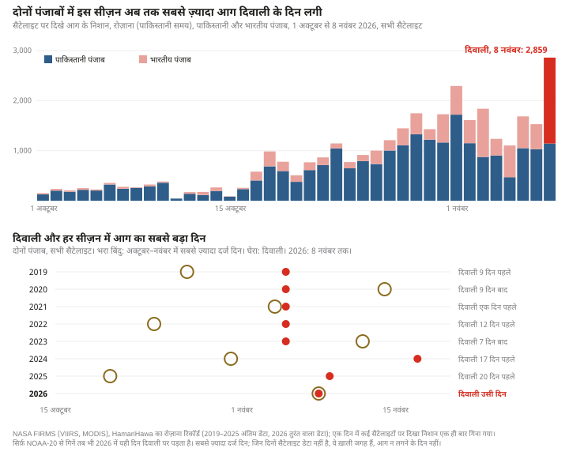
आग के निशानों का यह रिकॉर्ड आतिशबाज़ी का धुआँ नहीं मापता। आगे वह है जो लाहौर, दिल्ली और पाकिस्तान के दूसरे शहरों में हवा के मॉनिटरों ने दिखाया, और यह कि मॉडल की हवाएँ बीच में हवा को किस तरफ़ ले जाती दिखती हैं।
लाहौर, घंटे-दर-घंटे
IQAir लाहौर की हवा को शहर के एक आंकड़े के रूप में दिखाता है, जो उस घंटे रीडिंग देने वाले स्टेशनों की घंटेवार मात्रा का मीडियन होता है। रविवार को भी यह आंकड़ा ऊँचा था। आधी रात से सुबह 9 बजे तक यह 200 से 223 µg/m³ के बीच रहा, फिर दिन गर्म होने और धुआँ ऊपर फैलने से दोपहर तक 137 पर आ गया। नवंबर में लाहौर का यही रोज़ का ढर्रा है: रात और तड़के सबसे बुरा हाल, दोपहर बाद सबसे बेहतर।
रविवार की शाम सुबह से कुछ ख़ास अलग नहीं थी। शाम 7 बजे से आधी रात तक हर घंटे स्टेशन फ़ीड का मीडियन AQI 267 से 292 के बीच रहा, जबकि सुबह 9 बजे यह 294 था। असली बढ़त आधी रात के बाद आई। शहर का आंकड़ा हर घंटे बढ़ता गया: आधी रात वाले घंटे में 233 µg/m³, सुबह 4 बजे वाले घंटे में 313, और सुबह 9 बजे वाले घंटे में 398.5, यानी रविवार के उसी घंटे का 1.8 गुना। इसके बाद यह तेज़ी से गिरा: 11 बजे 280, दोपहर 12 बजे 186, और दोपहर 3 बजे 97।
यह बढ़त शहर की लगभग हर स्टेशन फ़ीड में दिखती है। हमने IQAir के शहर वाले पेज से जुड़े लाहौर के सभी 52 स्टेशनों का रिकॉर्ड पढ़ा; इनमें से 49 की दोनों दिन सुबह 9 बजे की रीडिंग मौजूद थी। इनमें से 48 में सोमवार की रीडिंग ज़्यादा थी, और 26 में AQI+ की रीडिंग कम से कम दोगुनी थी। मीडियन AQI 294 से बढ़कर 645 हो गया, और 39 फ़ीड 500 के पार थीं, जो PM2.5 के 325.4 µg/m³ के बराबर है। जो एक फ़ीड सुबह 9 बजे ज़्यादा नहीं थी, यानी रावी रोड, वह सुबह 4 बजे वाले घंटे में 457 के शिखर पर पहुँच चुकी थी। सुबह के वक़्त दो फ़ीड ने 1,000 से ऊपर की रीडिंग दिखाई: अल्लामा इक़बाल टाउन (1,063, सुबह 10 बजे वाले घंटे में) और क़ायदे-आज़म इंडस्ट्रियल एस्टेट का एक मॉनिटर (1,012, सुबह 9 बजे वाले घंटे में)। ये वे आंकड़े हैं जो IQAir ने दिखाए; हमने उपकरणों की जाँच नहीं की।
दिवाली की रात दिल्ली
9 नवंबर को IQAir पर दिल्ली की 30 स्टेशन फ़ीड थीं। IQAir के पेजों के मुताबिक़ इनमें से 17 केंद्रीय प्रदूषण नियंत्रण बोर्ड (CPCB) से जुड़ी हैं (इनके नाम के आख़िर में "- DPCC" या "- IITM" लिखा है), 10 सीधे दिल्ली प्रदूषण नियंत्रण समिति (DPCC) से, और 3 निजी लोगों से।
तीनों निजी सेंसर, जो रविवार दोपहर AQI क़रीब 210 से 220 पर थे, रात में 1,000 के पार चले गए: वीवी ब्लॉक सी रात 10:30 वाले घंटे में 1,206, 11:30 वाले में 1,682 और सुबह 4:30 वाले में 2,089 तक पहुँचा; सफ़दरजंग एन्क्लेव 1,565 और पूर्वी मार्ग 1,410 तक गए। DPCC की तीन फ़ीड भी रविवार रात 1,000 के पार गईं: विवेक विहार (1,591), आनंद विहार (1,380) और सोनिया विहार (1,085); और DPCC की चार फ़ीड शनिवार रात भी 1,000 पार कर चुकी थीं। DPCC की कई फ़ीड में लंबे गैप हैं, इसलिए वे यह नहीं बता सकतीं कि शहर के हर हिस्से में क्या हुआ।
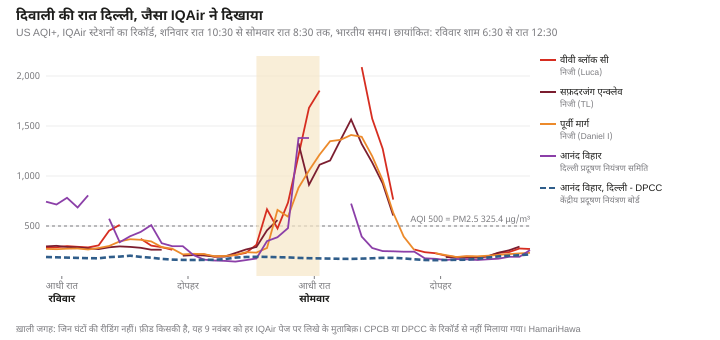
केंद्रीय प्रदूषण नियंत्रण बोर्ड से जुड़ी 17 फ़ीड में ऐसा कुछ नहीं दिखा। रात भर इनकी सबसे ऊँची रीडिंग 192 से 198 के बीच रही। इनमें से सोलह फ़ीड दो ऐसे गुटों में बँटी थीं जो असामान्य रूप से एक जैसे थे: रविवार शाम 6:30 से सोमवार सुबह 6:30 तक की 13 रीडिंग में, ग्यारह फ़ीड ने 12 बार बिल्कुल एक ही आंकड़ा दिखाया, और पाँच फ़ीड सभी 13 बार एक जैसी रहीं। बाक़ी एक फ़ीड की सीरीज़ अलग थी। इनमें से कुछ के नाम उन्हीं जगहों के हैं जिनकी DPCC फ़ीड 1,000 के पार गईं: मसलन IQAir पर आनंद विहार की दो फ़ीड ने एक ही घंटे में 1,380 और 178 दिखाया। हमें इसकी वजह नहीं पता। हो सकता है ये फ़ीड अलग-अलग उपकरणों से आती हों, इन पर अलग तरह से काम होता हो, या रास्ते में कहीं डेटा की कोई गड़बड़ी हो; हमने इन्हें CPCB या DPCC के सरकारी रिकॉर्ड से नहीं मिलाया, और इनसे कोई नतीजा नहीं निकालते। अमृतसर और लुधियाना की IQAir पर एक-एक सरकारी फ़ीड थी, और उन्हें भी हम इस्तेमाल नहीं करते।
मुल्तान और फ़ैसलाबाद
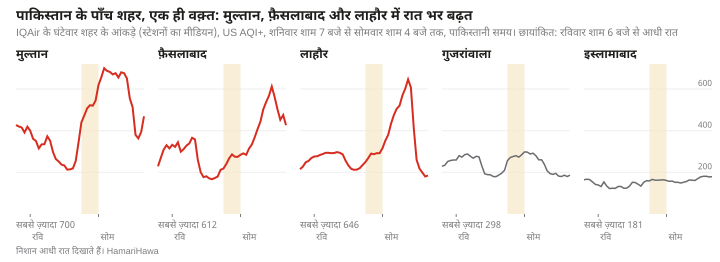
मुल्तान के लिए IQAir का शहर का आंकड़ा आधी रात वाले घंटे से सुबह 10 बजे वाले घंटे तक AQI 600 के ऊपर रहा, और रात 2 बजे 700 के शिखर पर पहुँचा। फ़ैसलाबाद सुबह 8 बजे से दोपहर 1 बजे तक 500 के ऊपर रहा, और सुबह 11 बजे 612 तक गया। लाहौर से 70 किलोमीटर उत्तर में गुजरांवाला ज़्यादा से ज़्यादा 298 तक गया, जो शनिवार रात के 288 से बस थोड़ा ऊपर है, और इस्लामाबाद 190 से नीचे रहा। सिर्फ़ लाहौर के स्टेशन एक-एक करके पढ़े गए।
चेतावनी और पूर्वानुमान
पाकिस्तानी पंजाब के पर्यावरण संरक्षण विभाग (EPD) ने इसकी पहले से चेतावनी दी थी। रविवार दोपहर 4:50 बजे छपी दुनिया न्यूज़ की ख़बर के मुताबिक़, विभाग ने एक ख़ास रिपोर्ट जारी कर आगाह किया कि लाहौर, क़सूर और सरहदी इलाक़ों में रविवार रात से सोमवार सुबह तक हवा का प्रदूषण ख़तरनाक हद तक बढ़ सकता है, और सोमवार सुबह क़रीब 10 बजे तक सबसे ज़्यादा रहेगा; इसकी वजह दिवाली की आतिशबाज़ी, भारतीय पंजाब से आने वाली प्रदूषित हवाएँ, पराली जलाना और रात की ठहरी हुई हवा बताई गई। हमें विभाग का असली बुलेटिन नहीं मिला, इसलिए हम ख़बर पर निर्भर हैं; विभाग ने कहा था कि वह 10 नवंबर को असली माप पर आधारित तुलनात्मक रिपोर्ट जारी करेगा।
कोपरनिकस एटमॉस्फ़ियर मॉनिटरिंग सर्विस (CAMS) का मॉडल, जिस पर कई मुफ़्त एयर-क्वालिटी ऐप चलते हैं, और इस वेबसाइट का पूर्वानुमान भी, उस सीरीज़ में उल्टी दिशा में गया जो हमने सोमवार 9 नवंबर को ली: उसमें लाहौर रविवार रात 9 बजे 148 µg/m³ से गिरकर सोमवार सुबह 9 बजे 85 पर आ गया, जबकि IQAir का शहर का आंकड़ा 212 से बढ़कर 398.5 हो गया। रविवार शाम असल में मॉडल का जो रन उपलब्ध था, वह हम हासिल नहीं कर सके, इसलिए यह नहीं कह सकते कि उस वक़्त ऐप पर क्या दिख रहा था। दोनों की तुलना बराबरी की भी नहीं है: मॉडल क़रीब 40 किलोमीटर चौड़े एक ख़ाने का एक आंकड़ा देता है, जबकि शहर का आंकड़ा स्टेशन फ़ीड का मीडियन है। जिन घंटों की हमने तुलना की, यानी शनिवार की रात, उनमें शहर का आंकड़ा मॉडल से 1.5 से 2 गुना रहा।
CAMS पराली की आग के धुएँ का अंदाज़ा उस गर्मी से लगाता है जो सैटेलाइट आग से मापते हैं। हम यह पता नहीं लगा सके कि मॉडल के इस रन में दिवाली की आतिशबाज़ी का कोई अलग उत्सर्जन जोड़ा गया था या नहीं; उत्सर्जन का छूट जाना, मॉडल की हवाएँ और उनका घुलना-मिलना, उसका मोटा ग्रिड, या डेटा की दिक़्क़तें, इनमें से हर एक इस फ़र्क़ के कुछ हिस्से की वजह हो सकती है।
लाहौर की हवा कहाँ से आई
लाहौर के आसपास मॉडल की हवाएँ शनिवार शाम उत्तर-पश्चिम से मुड़कर पूरब से चलने लगीं और धीमी रहीं, दोनों रातों में औसतन 8 किलोमीटर प्रति घंटा से कम। मॉडल की हवाओं को उल्टा चलाने से मोटा अंदाज़ा मिलता है कि हवा पहले कहाँ थी। हमने ये रास्ते दो ऊँचाइयों पर निकाले: ज़मीन के पास (10 मीटर) और 925 hPa दबाव की सतह पर, जो ज़मीन से कई सौ मीटर ऊपर है। रात में मॉडल के मुताबिक़ लाहौर के ऊपर हवा की घुलने-मिलने वाली परत सिर्फ़ कुछ दसियों मीटर गहरी थी, इसलिए ज़रूरी नहीं कि 925 hPa की हवा ज़मीनी मॉनिटरों तक पहुँची हो।
लाहौर। मॉडल के सभी आठ रास्ते, यानी सोमवार को आधी रात, सुबह 3, 6 और 9 बजे दोनों ऊँचाइयों पर पहुँचने वाली हवा के, पूरब से लाहौर आए और उससे पहले के कई घंटों में भारत की तरफ़ से सरहद पार की। आधी रात को पहुँची हवा रविवार शाम 6 बजे अमृतसर के पास थी; सुबह 9 बजे पहुँची हवा शाम 6 बजे 93 से 115 किलोमीटर पूरब में, कपूरथला और पूर्वी तरनतारन ज़िलों के ऊपर थी, और आधी रात को तरनतारन शहर के पास। रविवार सुबह 9 बजे पहुँची हवा ज़मीन के पास कुछ हद तक उत्तर-पूरब से आई थी, और 925 hPa पर पश्चिम से, हाफ़िज़ाबाद और ननकाना साहिब के ऊपर से।
फ़ैसलाबाद। सोमवार सुबह फ़ैसलाबाद पहुँची हवा, मॉडल के मुताबिक़, रविवार दोपहर 12 से शाम 6 बजे तक लाहौर के ऊपर थी, फिर शेख़ूपुरा और ननकाना साहिब के ऊपर से पश्चिम की ओर बढ़ी।
मुल्तान। ज़मीन के पास मुल्तान पहुँची हवा रविवार शाम पाकपत्तन के पास थी और रात में वेहाड़ी ज़िले से गुज़री। 925 hPa पर यह हवा भारतीय राजस्थान के गंगानगर की तरफ़ से आई।
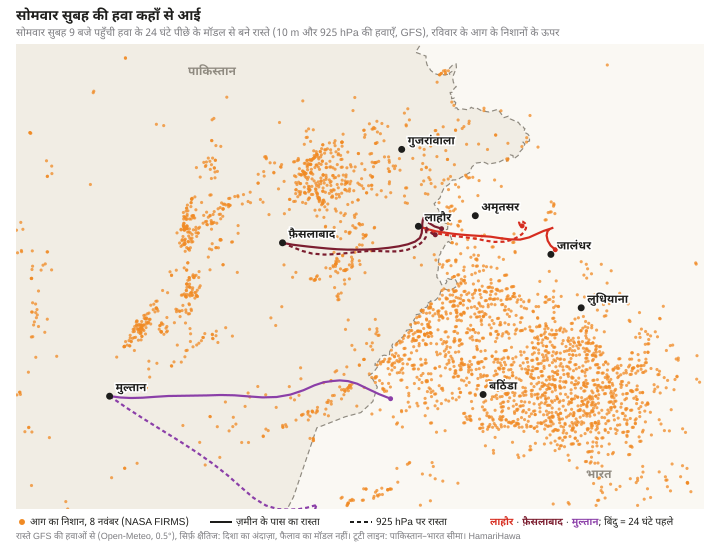
इन रास्तों के पास आग के निशान गिनना सिर्फ़ एक मोटी छँटाई है, धुएँ का माप नहीं। लाहौर पहुँची सुबह 9 बजे की हवा के रास्तों के 20 किलोमीटर के भीतर, हवा गुज़रने से पहले के 24 घंटों में, रिकॉर्ड में आग के 42 से 47 निशान थे, लगभग सब भारत में; 10 किलोमीटर की पट्टी में क़रीब 20, और 40 किलोमीटर की पट्टी में 146 (126 भारत में, 20 पाकिस्तान में)। यह दर्ज समय पर की गई छँटाई है, उन आगों की गिनती नहीं जिनका धुआँ लाहौर पहुँचना साबित हो। किसी रास्ते पर कम निशान का मतलब कम धुआँ नहीं: एक बड़ी आग, या सैटेलाइट के दो चक्करों के बीच जला एक खेत, कई छोटी आगों से ज़्यादा असर डाल सकता है।
आंकड़े क्या बताते हैं और क्या नहीं
क्या मापा गया। लाहौर, मुल्तान और फ़ैसलाबाद के लिए IQAir के शहर के आंकड़े 8 और 9 नवंबर की दरम्यानी रात और अगली सुबह तेज़ी से बढ़े: मुल्तान रात 2 बजे 700, लाहौर सुबह 9 बजे 646 और फ़ैसलाबाद सुबह 11 बजे 612 तक गया; लाहौर में यह बढ़त एक-एक स्टेशन में भी दिखती है। दिल्ली में निजी सेंसरों और DPCC की कुछ फ़ीड ने रविवार शाम से 1,000 के पार की रीडिंग दिखाई।
मॉडल क्या कहते हैं। पूरब की धीमी हवाएँ रविवार शाम और रात भर भारतीय पंजाब से हवा को लाहौर की ओर, और लाहौर से फ़ैसलाबाद की ओर ले गईं। ये रास्ते अंदाज़न हैं, और हो सकता है ऊपर वाला रास्ता ज़मीन तक न पहुँचा हो।
रविवार को क्या बदला। भारतीय पंजाब में आग की गिनती तेज़ी से बढ़ी, और वह दिवाली की रात थी। GFS मौसम मॉडल में लाहौर की रविवार की रात शनिवार की रात से ज़्यादा ठहरी हुई नहीं थी (औसतन 7.3 किलोमीटर प्रति घंटा, मुक़ाबले में 4.6), लेकिन औसत वह सब नहीं बताता जो धुएँ को रोक लेता है, और मॉडल माप नहीं है।
नमी। सस्ते सेंसर नम हवा में ज़्यादा रीडिंग दे सकते हैं, और IQAir इसे ठीक करता है। मॉडल के मुताबिक़ रात भर लाहौर की सापेक्ष आर्द्रता 40% से कम रही, जिससे नमी के असर की संभावना कम हो जाती है, हालाँकि इससे सेंसर की दूसरी दिक़्क़तें ख़ारिज नहीं होतीं।
आतिशबाज़ी, इस सीज़न के अब तक के सबसे बड़े आग वाले दिन का धुआँ, लाहौर का अपना उत्सर्जन और पिछले दिनों से जमा होता प्रदूषण, ये सब संभावित वजहें हैं। दिवाली की रात दिल्ली की रीडिंग आतिशबाज़ी के योगदान से मेल खाती हैं; ये फ़ीड न उस योगदान का हिस्सा तय करती हैं, न लाहौर पर उसका असर, और यहाँ के आंकड़े यह नहीं बता सकते कि लाहौर के 398.5 में किस स्रोत या किस देश का कितना हिस्सा था।
इसे कैसे परखा जा सकता है
आतिशबाज़ी अपने पीछे रासायनिक निशान छोड़ती है, जैसे पोटैशियम और स्ट्रॉन्शियम, बेरियम और ताँबे जैसी धातुएँ जो उसे रंग देती हैं, हालाँकि इनमें से कुछ के दूसरे स्रोत भी हैं। अगर लाहौर और दूसरे शहरों से दिवाली से पहले और बाद के दिनों के कणों के ठीक-ठाक नमूने रखे गए हों, तो उनमें एक साथ कई निशानों की जाँच करके, और नतीजों को स्रोतों के बँटवारे के विश्लेषण (source apportionment) और हवा के बहाव के मॉडल, जैसे NOAA के HYSPLIT, के साथ मिलाकर यह अंदाज़ा लगाने में मदद मिल सकती है कि किस स्रोत का कितना हिस्सा था। पर्यावरण संरक्षण विभाग के मॉनिटरों ने काम के नमूने रखे या नहीं, यह सिर्फ़ विभाग ही बता सकता है। उसकी वादा की गई तुलनात्मक रिपोर्ट, और रविवार का असली बुलेटिन जारी होने के समय के साथ, सार्वजनिक रिकॉर्ड में इज़ाफ़ा करेंगे।
हमने यह कैसे किया
हवा की गुणवत्ता: IQAir के शहर और स्टेशन पेज, History, Hourly, US AQI⁺ और PM2.5। IQAir का शहर का आंकड़ा उस घंटे रीडिंग देने वाले स्टेशनों की घंटेवार मात्रा का मीडियन है (IQAir का हिसाब का तरीक़ा)। शहर के आंकड़े 9 नवंबर को पाकिस्तानी समय के मुताबिक़ क़रीब शाम 5 बजे लिए गए; लाहौर और दिल्ली के हर स्टेशन का रिकॉर्ड रात 9:40 से 9:45 के बीच दोबारा लिया गया, और ऊपर दिए स्टेशन के आंकड़े उसी से हैं। घंटे उनके शुरू होने के समय से बताए गए हैं, जैसा IQAir के लेबल में होता है (मसलन "09:00–10:00")। दोनों बार के बीच IQAir ने कुछ घंटों के आंकड़े बदले: बाद में लाहौर का सुबह 9 बजे का आंकड़ा AQI 648 दिखा रहा था। US AQI अमेरिकी EPA के मौजूदा पैमानों से PM2.5 से निकाला गया है: 398.5 µg/m³ का मतलब 646।
दिल्ली की फ़ीड: फ़ीड किसकी है, यह 9 नवंबर को हर स्टेशन के IQAir पेज पर लिखे के मुताबिक़ ("Station from …")। जगहों के निर्देशांक और उपकरणों की क़िस्म पेजों पर नहीं थी और ली नहीं गई।
आग: NASA FIRMS की VIIRS (NOAA-20, NOAA-21; Suomi NPP जब तक 2 नवंबर 2026 को उसका डेटा बंद नहीं हुआ) और MODIS पहचानें, जिन्हें HamariHawa के रोज़ाना रिकॉर्ड में जोड़ा गया: पाकिस्तानी समय के एक ही दिन में क़रीब 400 मीटर के एक ही ग्रिड ख़ाने में आने वाली VIIRS पहचानें एक बार गिनी जाती हैं, और VIIRS निशान के पास की MODIS पहचानें छोड़ दी जाती हैं। यह गिनती निशानों की है, अलग-अलग आगों या खेतों की नहीं। 2019–2025 के सीज़न NASA के मानक (अंतिम) डेटा से हैं; 2026 तुरंत वाले डेटा से। जिन दिनों NOAA-20 का डेटा नहीं है, जैसे 1 अक्टूबर 2023, उन्हें ख़ाली जगह माना गया है, आग न लगने का दिन नहीं; सबसे बड़े दिन वे हैं जो रिकॉर्ड में सबसे बड़े दर्ज हैं। रोज़ाना गिनती और राज्य hamarihawa.org/api/day से। सीज़नों की तुलना हर साल के अक्टूबर और नवंबर की है, दोनों पंजाबों के लिए, सभी सैटेलाइट और सिर्फ़ NOAA-20 दोनों पर; 2026 का डेटा 8 नवंबर तक है।
मौसम और हवा के रास्ते: Open-Meteo के ज़रिए GFS, 10 मीटर और 925 hPa पर घंटेवार हवा 0.5° के ग्रिड पर, और हर शहर में हवा की घुलने-मिलने वाली परत की ऊँचाई, तापमान और नमी, 9 नवंबर को लिए गए। रास्ते 24 घंटे तक हर 15 मिनट पीछे जाते हैं, और हवा के पूरब–पश्चिम और उत्तर–दक्षिण हिस्सों को अलग-अलग मिलाकर निकाले गए हैं; ये सिर्फ़ क्षैतिज हैं। सरहद पार करने का पता नक्शे वाली देशों की सीमाओं से हर 15 मिनट के क़दम पर लगाया गया। आग के निशान किसी रास्ते के 10, 20 और 40 किलोमीटर के भीतर गिने गए, रास्ते पर हर 30 मिनट पर जाँच करके, और हवा गुज़रने से पहले के 24 घंटों में; रिकॉर्ड हर जोड़े गए निशान का एक ही समय रखता है।
मॉडल: Open-Meteo के एयर-क्वालिटी API से CAMS वैश्विक PM2.5, मध्य लाहौर का सबसे नज़दीकी ग्रिड पॉइंट, 9 नवंबर को ली गई सीरीज़; 8 नवंबर को उपलब्ध रन नहीं।
चेतावनी: दुनिया न्यूज़ (उर्दू), "दिवाली की आतिशबाज़ी और भारत से आने वाली प्रदूषित हवाओं से लाहौर में स्मॉग और बढ़ने का ख़तरा", 8 नवंबर 2026, दोपहर 4:50 (urdu.dunyanews.tv)।
दिवाली: रविवार 8 नवंबर 2026 (इंडिया पोस्ट की छुट्टियों की सूची)। पिछले सालों में: 27 अक्टूबर 2019, 14 नवंबर 2020, 4 नवंबर 2021, 24 अक्टूबर 2022, 12 नवंबर 2023, 31 अक्टूबर 2024 और 20 अक्टूबर 2025, यानी लक्ष्मी पूजा का मुख्य दिन (2024 में कुछ लोगों ने 1 नवंबर और 2025 में 21 अक्टूबर को मनाई)।
हर चार्ट और तालिका के पीछे का कच्चा डेटा और उन्हें बनाने वाली स्क्रिप्ट वेबसाइट की रिपॉज़िटरी में scripts/reports/lahore-morning-after-diwali/ के तहत मौजूद हैं।